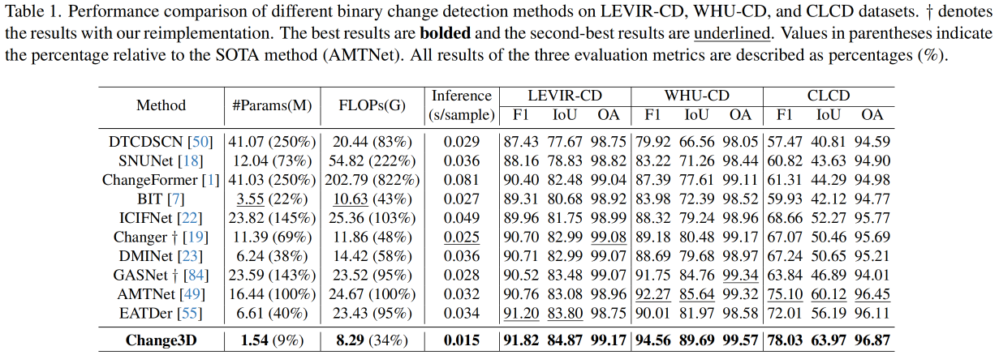
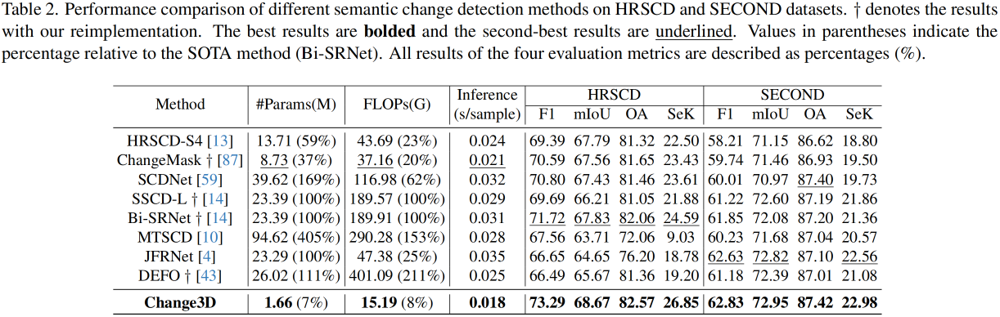
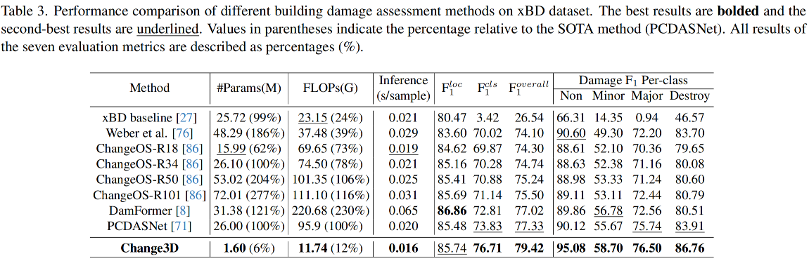
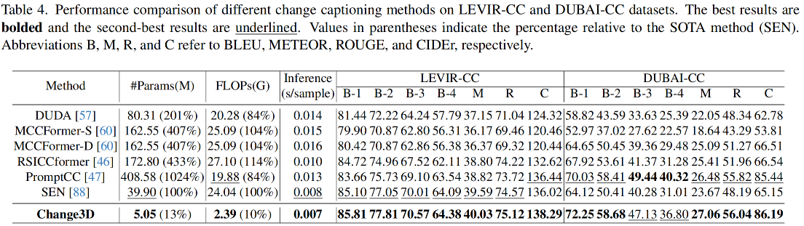

Abstract
In this paper, we present Change3D, a framework that reconceptualizes the change detection and captioning tasks through video modeling.
Recent methods have achieved remarkable success by regarding each pair of bi-temporal images as separate frames. They employ a shared-weight image encoder to extract spatial features and then use a change extractor to capture differences between the two images. However, image feature encoding, being a task-agnostic process, cannot attend to changed regions effectively. Furthermore, different change extractors designed for various change detection and captioning tasks make it difficult to have a unified framework.
To tackle these challenges, Change3D regards the bi-temporal images as comprising two frames akin to a tiny video. By integrating learnable perception frames between the bi-temporal images, a video encoder enables the perception frames to interact with the images directly and perceive their differences. Therefore, we can get rid of the intricate change extractors, providing a unified framework for different change detection and captioning tasks. We verify Change3D on multiple tasks, encompassing change detection (including binary change detection (BCD), semantic change detection (SCD), and building damage assessment (BDA)) and change captioning (CC), across eight standard benchmarks. Without bells and whistles, this simple yet effective framework can achieve superior performance with an ultra-light video model comprising only ∼6%-13% of the parameters and ∼8%-34% of the FLOPs compared to state-of-the-art methods.
Overall Architectures
Overall architectures of Change3D for BCD, SCD, BDA, and CC: (a) BCD necessitates acquiring a feature to represent changed targets, thus a perception frame is incorporated for sensing. (b) SCD involves representing semantic changes in T1 and T2 alongside binary changes. To accomplish this, three perception frames are integrated to facilitate semantic change learning. (c) BDA entails expressing two perception features for building localization and damage classification. Therefore, two perception frames are inserted to capture building damage. (d) CC involves generating a feature that represents the altered content, thus incorporating a perception frame for interpreting content changes.
Performance
We conduct extensive experiments on eight public datasets: LEVIR-CD, WHU-CD, CLCD, HRSCD, SECOND, xBD, LEVIR-CC, and DUBAI-CC.
   
Visualization
We present qualitative results comparison to further demonstrate the effectiveness of Change3D.

Visualization of bi-temporal features F1, F2, and extracted changes FC . Change3D directly focuses on changes during video encoding without intricate change extractors. for different colors.

Qualitative comparison on three BCD datasets. White represents a true positive, black is a true negative, green indicates a false positive, and red is a false negative. Fewer green and red pixels represent better performance.

Qualitative comparison on the HRSCD dataset. Black represents non-change, red denotes artificial surfaces, green indicates agricultural areas, blue means forests, yellow represents wetlands, and teal indicates water.

Qualitative comparison on the SECOND dataset. Black represents non-change, red denotes low-vegetation, green indicates non-vegetated ground surface, blue means trees, yellow represents water, teal indicates buildings, and violet denotes playgrounds

Qualitative comparison on the xBD dataset. Black represents non-change, white denotes non-damage, green indicates minor damage, orange represents major damage, red indicates destroyed.

Qualitative comparison on the LEVIR-CC dataset. Green indicates correct captions, while red indicates incorrect predictions.